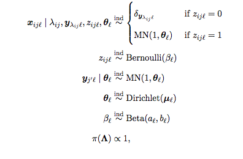
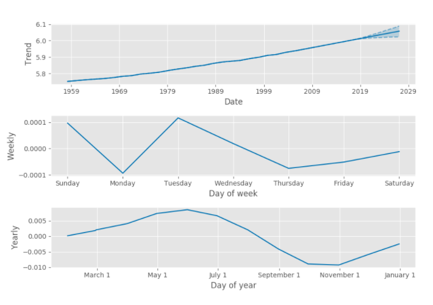

class: center, middle, full-bleed <img src="img/iso-cover.png" width="40%"> ## Probabilistic Programming #### Friederike Schüür • <Friederike@fastforwardlabs.com> #### Fast Forward Labs • [@fastforwardlabs](https://twitter.com/fastforwardlabs) • [fastforwardlabs.com](http://www.fastforwardlabs.com) ??? Welcome! --- class: full-bleed, center, middle  ??? We recently looked into probablistic programming, a set of techniques to make Bayesian Inference more accessible. Today's talk will cover some of the highlights and I hope we can have a lively conversation about the utility of these techniques after the talk. --- ## What is Bayesian inference? Bayesian inference is a method of statistical inference in which Bayes' theorem is used to update the probability for a hypothesis as more evidence or information becomes available. - I believe it is raining outside. - I see my colleague walking into the office with a wet umbrella. - I *strongly* believe it is raining outside. Bayesian inference quantifies changes in belief in the light of new, incoming evidence, a.k.a. data. ## More about Bayes' theorem later! --- ### Bayesian inference is great in theory... - Quantify risk - Insert institutional knowledge - Interpretability - Online learning ### but it's slow if you're not careful. ### Being careful requires cleverness... - Metropolis Hastings - Hamiltonian Monte Carlo with automatic differentiation and NUTS - ADVI ### the cleverness is now ready to abstracted away! ??? Let me highlight the power of probabilistic programming, and Bayesian inference, using a simple example. --- class: center, middle, full-bleed  ??? I conduct this A/B test and get these results. Clearly layout B is better. If I had a million visitors to both layouts then yes, very probably. But what if I had 25 visitors to layout A, and 20 visitors to layout B. Are you confident that these results would generalize to the real world? And what if it costs you $100k to deploy the change? Do you want to risk it? --- class: center, middle, full-bleed  ??? This is the central problem of data analysis. I don't care how big your data is. It's still bad. Measurement error, incomplete. Noise. Given that's a fact of live. We need a way to quantify uncertainty. And what if layout A has been running for weeks already before the test. We need a way to incorporate that knowledge into our analysis. --- class: center, middle, full-bleed  ??? This is Bayes rule. One of the few equations you are going to show today. It's the central idea of data analysis. It's extremely simple. The thing on the left is the probability a hypothesis is true, given our data. That hypothesis might be "the conversion fraction for layout A is 3.57%" or "It is raining outside.". This is the posterior distribution, and it's almost always the thing we want to know. We can use it to answer questions like "is layout A better than layout B" or "It's raining outside, isn't it?". How do we get it? From the things on the right. Far right is the likelihood. That is a thing you can calculate. It says: what if we _assumed_ the hypothesis were true. How likely is it we would have got the observations we in fact got. And the other thing on the right is the _prior_. That's how likely we though the hypothesis was prior to our collection of data (or, given all data we collected up until this point). --- class: center, middle, full-bleed  ??? How do we use this rule? Let's start with layout A. Let's say layout A had been running for a few days, and we suspected its conversion fraction was around 3.5%. That's the prior on the left. We're not ruling out 1% or 5%, but 3.5% is our best guess. Note here: we're incorporating institutional knowledge. Now we use Bayes rule to update the prior in the light of our data, to get the posterior. The right hand plot is the probability of each possible conversion fraction for layout A given the data, which was 4 conversions out of 100 visitors. --- class: center, middle, full-bleed  ??? Maybe layout B is a new layout. We had no idea what it's conversion fraction would be, so we use what's called a uninformative prior. We assume every possible value between 0 and 1 is equally likely. You can still use this approach when you have no institutional knowledge! Now we use Bayes rule to update the prior in the light of our data, to get the posterior. The right hand plot is the probability of each possible conversion fraction for layout B given the data, which was 2 out of 50. --- class: center, middle, full-bleed  ??? Finally to answer the question is layout A or layout B better, we compare the two posteriors. What's the answer? Layout A or layout B? We can't say! Data science and machine learning does not give 0/1 answers. Instead, what we can say is precisely how likely it is that layout B is better than layout A. I think it's about 60% in this case. So if it costs you hundreds of thousands of dollars to change your website, you're probably not confident enough. You don't only have the ability to say how likely possibility 1 is. You can say how likely all the other possibilities are! In that way you can quantify risk. This is the first huge advantage of this approach. We can assign probabilities to all possible outcomes. If we don't like what we can see, we can run the experiment for longer, until we're more confident. And if we can't run the experiment for longer, we can decide how much to bet, now we know the odds. That's the power of having the full probabilistic picture. The ability to quantify exactly how likely every possibility is, is not just a slight improvement. It opens up qualitatively new kinds of products. --- class: center, middle, full-bleed  ??? Probability someone converts with layout p: Bernoulli distribution, named after Swiss scientist Jacob Bernoulli,[1] is the probability distribution of a random variable which takes the value 1 with probability {\displaystyle p} p and the value 0 with probability {\displaystyle q=1-p} q=1-p—i.e., the probability distribution of any single experiment that asks a yes–no question. We don't know p (for sure), we express that uncertainy but putting a distribution over p. Math dictates, that distribution is a Beta distribution. Two parameters (a,b). Data shape these parameters. Simple case, we will see more complex examples later on. --- class: center, middle, full-bleed  ??? I'm now going to enumerate a couple of other advantages of this approach. The first is that it naturally incorporates the idea that you become more certain as you get more data. So if we run the A/B test for longer our posterior becomes _narrower_. We assign more and more probabiltiy to a narrower and narrower region. We become more confident. In fact, you can take this idea to the limit and feed in data one example at a time. This is _online learning_. At any point in time, we have a full picture of what we know, and that picture is getting more and more complete. This is great for bootstrapping a startup that wants to use machine learning, but doesn't have any customers. In the early days, when you don't have much data, your predictions will look like your prior. They may not be perfect, but it's a start. As you gather data, your model will evolve to better reflect your customers' behaviour and become more confident. --- class: full-bleed <img width="100%" src="img/loans.png"> ??? Explain prototype. --- class: full-bleed <img width="100%" src="img/nycrealestate.png"> --- class: full-bleed <img width="100%" src="img/realestatezoom.png"> --- class: center, middle, full-bleed  ??? Shows another advantage of the Bayesian approach, it allows hierarchical modeling. This is particularly useful when you have segmented data, and some of the segments are empty. So if you have users in different towns and countries, and one week you happen to have no visitors from Philadelphia. But you do have visitors from New York. You can set up a hierarchical model that allows you to fill in the blanks, and take advantage of the fact that people from Philadelphia are demographically more similar to people from New York than to people from Kuala Lumpar. In the absence of direct measurements, you've got the next best thing. I'll show a prototype we built in a second that depends critically on this idea. --- class: center, middle, full-bleed  ??? Record linkage - This illustrates the first 204 records, where each node is a record and edges are drawn between records with shared most probable MMSs. Transitivity is clear from the fact that each connected component is a clique, or rather, each record is connected to every other record in the same set. Color indicates whether or not the probability of the shared most probable MMS was above (green) or below (red) a threshold of 0.8. --- class: center, middle, full-bleed  ??? Let xij be the data for the jth record in file i, where i = 1, . . . , k, j = 1, . . . , ni , and ni is the number of records in file i; xij is a categorical vector of length p. Let yj 0 be the latent vector of true field values for the j 0 th individual in the population (or rather aggregate sample), where j 0 = 1, . . . , N, N being the total number of observed individuals from the population. N could be as small as 1 if every record in every file refers to the same individual or as large as Nmax ≡ Pk i=1 ni if no datasets share any individuals. Next, we define the linkage structure Λ = {λij ; i = 1, . . . , k ; j = 1, . . . , ni} where λij is an integer from 1 to Nmax indicating which latent individual the jth record in file i refers to, i.e., xij is a possibly-distorted measurement of yλij . Finally, zij` is 1 or 0 according to whether or not a particular field ` is distorted in xij . --- class: center, middle, full-bleed  ??? Finally there's interpretability. Bayesian inference requires you to write down a model that specifies how your data was made. You don't know the values of the parameters until you do the inference, but you the structure of their relation. Given you created the model it is _interpretable by construction_. You will always have an answer to the question: why was a particular prediction made. This can be used to create actionable insights. The model says this customer is going to churn for reason X, so let's change X about that customer. And interpretability is in some cases not just nice to have, it's a legal requirement! --- ### Approximate Bayesian Computation (Rejection Sampling) ```python def sampler_abc(data, prior_sampler, simulate, compare): '''Yield samples from the posterior by Approximate Bayesian Computation.''' for p in prior_sampler: if compare(simulate(p), data): yield p ``` ??? That all sounds great, right? Unfortunately, generally speaking, it's not possible to use the equation directly. For interesting problems modeled in realistic ways, the calculations are expensive or impossible. So we solve problems by simulation. So here's the brute force way of doing it, which is called Approximte Bayesian Computation, or rejection sampling. This is the entire algorithm, it's simple. The problem is that compare function. To accept a sample we require exact agreement between the simulation and the observation. Even if our trial value of the conversion fraction is "correct", the probability of the simulation yielding exactly 20 conversions out of 400 is tiny. So, usually we say "sufficiently similar", very costly approach since you brute force the answer. https://en.wikipedia.org/wiki/Approximate_Bayesian_computation --- ### Metropolis Hastings ```python import numpy as np import itertools as it def sampler_mh(dist, x0=0, burnin=1000, alpha=0.5, verbose=False): x = x0 samples_accept = 0 for i in it.count(1): candidate = np.random.normal(loc=x, scale=alpha) candidate_prob = min([1.0, dist(candidate) / dist(x)]) accept = np.random.rand() if accept < candidate_prob: samples_accept += 1 x = candidate if i > burnin: yield x, i, samples_accept ``` ??? If ABC is too slow, the next thing we can try is MH. It's only a few lines of code. Conceptually: the sampler chooses a value for the parameter and returns that. To get the next sample, it evaluates the probability for that choice, and also in some other location. If the other location is higher probability, the sampler tosses a coin to decide whether to move over to that new location for the next round. For this talk, the details aren't important: what is important is that this algorithm guarantees that the sampler will generally move towards values that are higher probability. Spending time in these locations makes the acceptance rate _much_ higher! Mission accomplished. But sometimes even this is too slow. --- ### Hamiltonian Monte Carlo with autodiff and NUTS <img src="img/hmc.png" width="30%"> ??? Hamiltonian Monte Carlo is the latest and greatest. It's _much_ faster at finding the interesting, high probability bits of the problem. It's practical even if there are thousands of parameters. It does this it at a cost: it needs to know not just the probability of a given choice of parameters, but also the rate of change of that probability. That's the gradient. You get the gradient of a function by differentiating. If you remember your calculus, you'll remember that this wasn't always an easy thing to do, and it was rarely fun. The solution is automatic differentiation. What this approach allows, however, is for you to leave the calculus to the computer. If you give it the function, it's able to efficiently and accurately evaluate its derivative, or gradient. That allows Hamiltonian Monte Carlo to explore the probability space strategically, rather than at random as in rejection sampling, or semi-randomly as in Metropolis Hastings. Hamiltonian Monte Carlo was further improved a couple of years ago by NUTS (or the No U-Turn Sampler). That makes it more _robust_, which is the nice way of saying "idiot proof". Thanks to autodiff you nonger have to differentiate a function to use HMC. And thanks to NUTS, you no longer have to tune sensitive parameters to get it to work. --- ### Automatic Differentiation Variational Inference <img src="img/advi.png" width="70%"> ??? And this is variational inference by automatic differentiation (ADVI), the new hotness. Computational statisticians are still trying to figure out to what extent the results can be trusted, but it's blazingly fast. --- ### Bayesian inference is great in theory... - Quantify risk - Insert institutional knowledge - Interpretability - Online learning -- ### but it's slow if you're not careful. -- ### Being careful requires cleverness... - Metropolis Hastings - Hamiltonian Monte Carlo with automatic differentiation and NUTS - ADVI -- ### the cleverness is now ready to abstracted away 😎 --- class: center, middle, full-bleed  ??? These complexities and more get abstracted away in a programming paradigm called probabilistic programming. In these systems, industrial strength implementations of the latest and greatest inference algorithms are baked in to the language as one-liners. This is similar to the way a fiddly algorithm like back propagation is available in deep learning frameworks like Tensorflow or Torch. All that's left to do for the user of these systems is specify the model, i.e. describe the random process that, for a given choice of parameters, generates the observations. For a problem like A/B testing that's very simple. There's an unknown conversion probability, and each visitor converts with that probability. For more complicated problems it can be trickier to specify the model. Probabilistic programming languages make things easier by including fundamental ideals like probability distributions and random variables as primitives of the language. Now at this point, if you're a certain age, say my age or up, you may be saying this sounds a lot like BUGS (or WinBUGS). And yes, they were early probabilistic programming systems. But what's changed in the last 2 or so years with the arrival of Stan and pymc3 is that HMC is now widely available. And that means that internet-scale problems are now tractable. --- class: middle ```C /* define data */ data { int<lower=0> N; int<lower=0> N_features; matrix[N, N_features] X; int<lower=0,upper=1> repaid[N]; } /* define the thing you want to know */ parameters { vector[N_features] p_coef; } /* declare how the data is related to the thing you want to know */ model { vector[N] p; p_coef ~ cauchy(0, 2.5); p = logit(X * p_coef); repaid ~ bernoulli(p); } ``` ??? What does working with these languages look like? Well, here's almost the complete Stan listing for a product I'm going to show you in a second that predicts loan repayment based on income, outstanding debt, loan purpose, etc. And yes, it's very short! This is a side-product of distributions and RVs being primitives of the language. You write this Stan code. Then you write some data munging code in the general purpose language of your choice (Python in our case), and you call Stan from within that language. Stan translates the stan code to C++, which it compiles and runs for you on the data you feed in from your glue code. If that sounds a bit hacky, I am not necessarily going to disagree with you. But it works! You've got the posterior distribution for each paramter of your model. --- class: full-bleed <img width="100%" src="img/loans.png"> ??? --- ## Probabilistic Programming Options #### Stan - great for offline analysis 👍 - but it's very awkward to productize #### pymc3 - algorithmically half a step behind (much less true than it used to be) - much easier to build products with 😎 #### Others - Anglican - Edward - Figaro ??? Every time you change your stan model, you need to change your application code too. They risk getting out of sync in ways that break things spectactularly or, even worse, subtly. --- ## It's a Useful Technique for Many Problems - Scenario analysis for risk (e.g., financial services, insurance) - Effectiveness of medical tests and interventions - Pharmacokinetic/pharmacodynamic modeling (work by Stan Group w. Novartis) - Network latencies (limited data, costs to underestimating and overestimating) - Sports analytics - Elections forecasting ## Across a Variety of Industries. ??? [Clinical trials and efficacy] https://www.ncbi.nlm.nih.gov/pmc/articles/PMC3967501/ Stan Group, helped Novartis to determine drug dosages using Bayesian methods implemented. In particular, they model how drugs are absorbed into the body (i.e., pharmacokinetics). The selection of a drug dosage regimen is based on estimates of the patient's pharmacokinetic parameters governing how quickly the body can absorb the drug adjusted for patient characteristics (ie., weight, age, sex). Using the Bayesian approach, they estimate a patient's parameters from measured drug levels using the a priori pharmacokinetic parameters of the population model as a starting estimate. Then they adjust the starting estimates based on the patient's measured drug levels. Combining knowledge about the individual with knowledge about the population leads to more precise estimates than using either data set by itself, helping us chose the best drug dosage regimen. --- ## Use probabilistic programming When you - need to **quantify the probability of all possibilities**, not just determine which is most likely - want to make use of **institutional knowledge** - want to do **online learning** (i.e., continually update your model as data arrives) - want to do **active learning** (i.e., gather more information until your predictions reach some threshold of confidence) - want to use data to **decide if a more complicated model is justified** - have several **heterogeneous datasets** - need to **explain your decisions** to customers or regulators - have **sparse data** with a shared or hierarchical structure --- class: full-bleed, middle, center <img width="80%" src="img/prophet.png"> ??? Facebook released a probabilistic programming product last month! It's Python and R applications that use Stan under the hood for general purpose seasonal forecasting. --- class: full-bleed, middle, center  --- ## Further reading - Play with the NYC real estate prototype, [www.fastforwardlabs.com/pre](http://www.fastforwardlabs.com/pre/) - [Understanding Bayes: How to become a Bayesian in eight easy steps](https://alexanderetz.com/2016/02/07/understanding-bayes-how-to-become-a-bayesian-in-eight-easy-steps/) - [The algorithms behind probabilsitic programming](http://blog.fastforwardlabs.com/2017/01/30/the-algorithms-behind-probabilistic-programming.html) - [The history of pymc3](http://stronginference.com/pymc3-release.html) - [Taking Prophet for a spin](http://blog.fastforwardlabs.com/2017/03/22/prophet.html) - Slides: [fastforwardlabs.com/talks/pp-deloitte/#1](http://www.fastforwardlabs.com/talks/pp-deloitte/#1) --- class: center, middle, full-bleed <img src="img/iso-cover.png" width="40%"> ## Probabilistic Programming #### Friederike Schüür • <Friederike@fastforwardlabs.com> #### Fast Forward Labs • [@fastforwardlabs](https://twitter.com/fastforwardlabs) • [fastforwardlabs.com](http://www.fastforwardlabs.com) ???